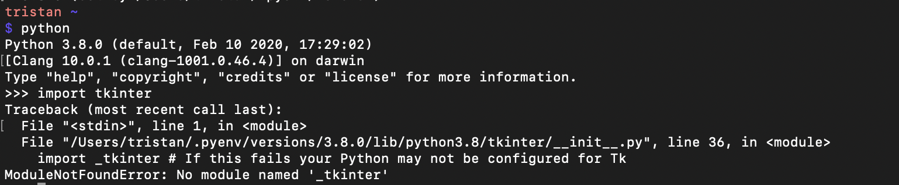
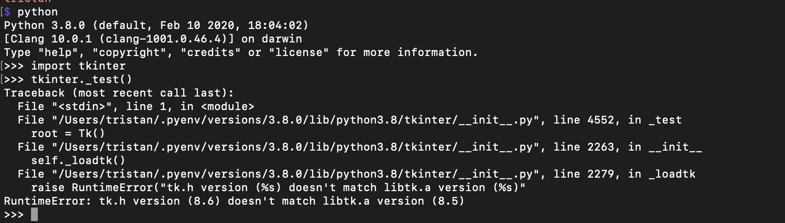

Diagnosing an Error when Importing tkinter
A couple days ago I encountered a problem while working on a project using tkinter, a popular Python GUI package. At first glance, everything seemed fine -- PyCharm appeared to recognize tkinter and nothing suggested anything was amiss. However, when I tried running my program I got an error message that looked like this:

I first checked to make sure that I was using the appropriate syntax was importing the correct tkinter. Perhaps the T needed to be capitalized? No, that's only when using Python 2. After a couple minutes of Googling, I became confident that the problem was something else. Fortunately, the error message offered a helpful suggestion -- perhaps the Python I was using hadn't been correctly configured to work with Tk.
After doing a bit more Google searching, it seemed that other people had experienced similar issues.
One commenter suggested that Mac OSX users install tcl-tk before installing Python with
pyenv. I ran pyenv uninstall 3.8.0 to uninstall Python, installed tcl-tk using Homebrew, and then reinstalled
Python 3.8.0 using pyenv.
I confirmed I was using the appropriate version of Python, then tried importing tkinter again, and got the same error message as before.
I ran brew list and confirmed that Homebrew had in fact installed tcl-tk. I then ran brew info tcl-tk and got this
helpful message:

The message indicated that I needed to add tcl-tk to my PATH.
I ran the suggested commands, and confirmed that the directives were added to my bash profile.
I tried importing tkinter again, and once again got the same message.
I asked a friend for advice, and she suggested that I uninstall Python again, and then
run
env PYTHON_CONFIGURE_OPTS_ARRAY="--with-tcltk-libs='-L/usr/local/opt/tcl-tk/lib -ltcl8.6 -ltk8.6'"
in my console before reinstalling Python.
I did this, and this time when I ran import tkinter I
didn't get an error message. Excited, I ran tkinter._test() and felt a sense of relief as a window
popped up. My relief didn't last long, however, as I quickly noticed an error message in my console:

Additionally, I realized that the window that had appeared failed to display the correct information. Fortunately, the problem seemed clear from the error message: the tk.h version didn't match the libtk.a version. After doing a bit of Google searching for similar problems, I found that someone had listed a series of steps to get the latest version of tcl-tk to work with the pyenv Python install.
So I edited my python-build file, replacing
$CONFIGURE_OPTS ${!PACKAGE_CONFIGURE_OPTS}
"${!PACKAGE_CONFIGURE_OPTS_ARRAY}" || return 1
with
$CONFIGURE_OPTS --with-tcltk-includes='-I/usr/local/opt/tcl-tk/include' --with-tcltk-libs='-L/usr/local/opt/tcl-tk/lib
-ltcl8.6 -ltk8.6' ${!PACKAGE_CONFIGURE_OPTS} "${!PACKAGE_CONFIGURE_OPTS_ARRAY}" || return 1
I then re-installed Python, and then ran echo -e 'if command -v pyenv 1>/dev/null 2>&1; then\n eval "$(pyenv init -)"\nfi' >> ~/.bash_profile
to update my bash file.
Finally, I re-started my command line, checked that I was using the right version of Python, successfully
ran import tkinter, then ran tkinter_test().
This time, the correct window appeared, and there was no error message in the terminal -- I had finally fixed the problem!
When using so many different tools and technologies that interact in various ways, it's inevitable that sometimes things don't work as they should. Fortunately, there are only so many things that can go wrong, and oftentimes someone else has experienced the same problem and devised a solution. Even though this ended up being the case here, it still took me a few hours to resolve the tkinter issue. But while troubleshooting the problem was frustrating, I ended up feeling quite a bit of satisfaction after the test finally passed successfully.